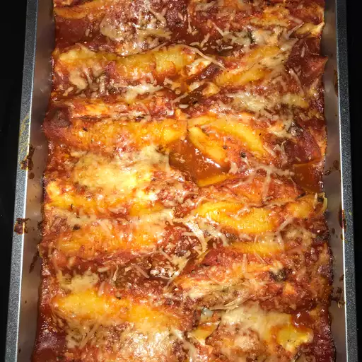

Manicotti Recipe

How to Make Manicotti
You'll find a detailed ingredient list and step-by-step instructions in the recipe below, but let's go over the basics:
Manicotti Ingredients
These are the ingredients you'll need to make this manicotti recipe at home:
- Pasta: Use store-bought or homemade manicotti pasta shells.
- Cheeses: You’ll stuff the manicotti with a rich mixture of ricotta, mozzarella, and Parmesan cheeses.
- Eggs: Two eggs lend moisture and help bind the filling together.
- Seasonings: The manicotti recipe is seasoned with dried parsley, salt, and ground black pepper.
How to Make Homemade Manicotti
Here's a very brief overview of what you can expect when you make homemade manicotti:
- Boil and drain the manicotti.
- Make the filling and spread sauce in the bottom of a baking dish.
- Stuff the shells and arrange them over the sauce.
- Pour the remaining sauce over the shells and sprinkle with Parmesan.
- Bake the manicotti until bubbly.